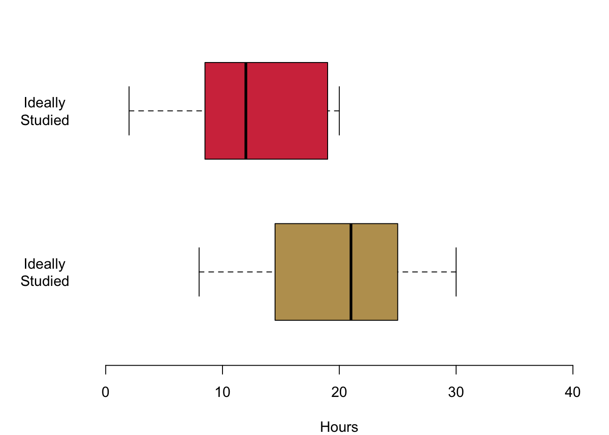
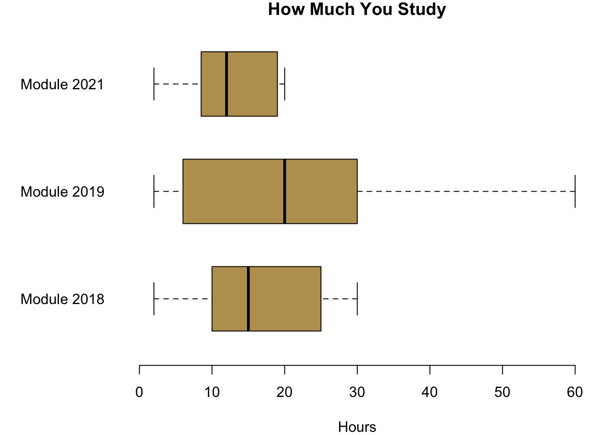
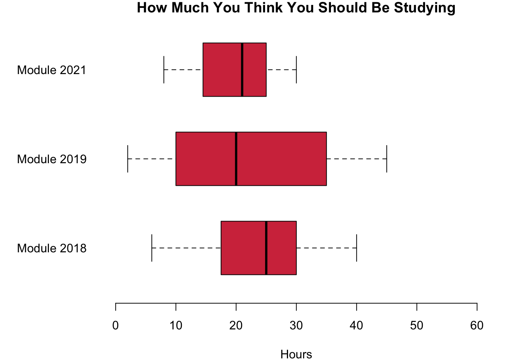

Chapter 4 Testing a Hypothesis
Welcome to the second part of the module PL9239. In our second scenario we turn to one of the core tasks of any data analysis: inference. The basic idea is that you want to be able to make a statement—e.g. calculate a statistic—about the world out there. But since the world out there is so large it is impossible to collect data about everything, we will have to chose a different approach. Instead, we are going to learn how to collect data about a sample and then say something with a little uncertainty about the world at large.
To show you how useful all this actually is, I interviewed Michelle Brown who is working as a Senior Advisor on Elections for the National Democratic Institute. This NGO cooperates with local civil society actors in fragile democracies and trains them to do voting observation missions. These election observers tabulate the ballots in parallel to the official representatives and can thus get an idea about the amount of voting fraud that might be occurring.
Obviously, it is prohibitive to observe every single polling station. In some countries there might be tens of thousands of polling stations and an NGO never has the resources to cover all that. Instead, the NDI relies on sampling. Election observers only monitor randomly selected polling stations, and the NDI then uses statistics to infer what is really going on.
Together with colleagues, we are doing research with the National Democratic Institute that helps them improve their technology stack even further. In case you are interested, feel free to take a look at a presentation I gave at last year’s CogX—it might give you a good overview about what we are doing. Of course, feel free to reach out in case you want to know more.
4.1 Generating Good Hypotheses
All research requires hypotheses. What is a good hypothesis? Good Hypotheses have a number of characteristics.
- A hypothesis is falsifiable.
- A hypothesis relates two observations.
- A hypothesis qualifies this relation, i.e. makes a statement whether the relation is the same, larger or smaller.
Let me walk you through good hypothesis in a short video using our data as an example.
4.2 Studying Our Sample
4.2.1 Investigating the Hypothesis
We investigate our data and take a look at what the data is telling us. First we compare the hours that you are studying with the hours that you think you should be studying. Given that we assume that you have a bit of a bad conscious regarding your efforts, there should be a clear difference.
Hypothesis 1: On average, you think that you should be studying more than you actually are.
Let us investigate the question. We begin with Hypothesis 1.

It seems, there is a lot to our hypothesis. Given the two distributions, there seems to be a clear difference.
Next we will compare you to the cohort here in Cardiff two years ago. Actually, I asked them the same questions that I asked you. Would we expect any difference between you and the previous cohorts? There is no real reason to believe that the cohorts are different, so:
Hypothesis 2a: On average, all three cohorts are putting in the same effort.
Hypothesis 2b: On average, you and your previous cohorts have the same expectations regarding the efforts that you think you should be making for your university degree.
Let us take a look at what the data is telling us.

It seems as if on average you are investing less than the cohorts in 2019 and 2018. It is also interesting that the variation between you is much lower than the variation in the previous cohorts. Now when you compare your cohort to the cohorts with regards to how much you think you should be studying, your ideal number of hours is on average not so different and you seem to be a bit more in line with the other students.
4.3 Is What We See Just Coincidence?
We have seen that indeed there are slight differences between your module and the students in the module before you. Now, can we say something about your cohort—all Politics and IR students in your year—more in general? It could be, for example, that out of pure coincidence you are a particularly efficient crowd of students who do not need as much time to study as the cohorts before you. So given the differences in the observations from your class and the classes in previous years, can we say something about whether we would expect differences in your cohorts in general?
4.3.1 Are the Two Cohorts the Same?
To be able to answer this question, we first need to understand the idea of sampling. Sampling means to draw a number of observations randomly from a larger population. Intuitively, our sample should be able to provide us with a good account of what is going on in the population. Of course, with bad luck we can always be wrong and sample a result that is quite unusual given what is going on in the population.
It is also intuitive that larger samples should be less prone to coincidences. If we only ask a few number of individuals, there is fair likelihood that these few people do not represent the overall population well. However, if we ask a larger amount of people, we could be fairly certain that this sample gives us a good insight about the overall population.
How does it help us understand whether your cohort is different from the cohort before you? Let us assume that on average the effort that you put into your studies is the same, for you and for the cohorts before you. How likely is it that we would observe these two samples assuming that the cohorts invest on average the same amount of time? What are the odds to observe these differences? We have a clear expectation. If the average amount of hours in our data sample is largely different, then this is already a good indication that it should be quite unlikely to observe so different samples given that they all come from the same population.
If it is unlikely that we observe such a group of students on the basis of pure coincidence, we should maybe revisit our initial assumption. Maybe, it was wrong to assume that you and the other cohorts all share the same efficiency in studying. We would then have to refute this initial assumption and rather conclude that, well maybe your group indeed puts in a different effort into your studies.
4.3.2 How Can We Tell the Difference?
In the light of the two samples that we observe, we want to be able to determine how likely it is that they are from the same population? So we need a measure. It is called the p-value and in our example it will be able to tell us how likely is it to observe the mean of the two samples given that we assume they come from the same population.
This is a very useful measure, because now we can say something about the likelihood that these samples really are from cohorts with the same amount of effort in both groups. If the samples look quite similar, then we can be certain that they are from same population. However, if they are really distinct, the probability that the cohorts have similar efforts is quite small. So what should we conclude? We might want to reconsider our initial assumption: Maybe the two cohorts are not one large population. Instead, maybe the two cohorts are different after all.
4.3.3 Hypothesis Testing
What we are doing here is called hypothesis testing. More formally, we distinguish between two hypothesis. The first one is called the null-hypothesis and it assumes that there is no difference between the two groups. We can specify it explicitly as follows.
Null hypothesis (\(H_0\)): The samples come from populations with the same mean.
As a default, we will always at first believe in the fact that there is no difference between the cohorts. We change our minds only if we see that it is quite unlikely that we would observe our two samples. In that case we will then rather prefer a different hypothesis, the alternative hypothesis.
Alternative hypothesis (\(H_A\)): The samples come from populations with different means.
If we believe in the alternative hypothesis, then we say that the two populations are different.
How unlikely is ‘unlikely enough’ to change our minds? By convention, in the Social Sciences we define a threshold of 5% for that: We will believe in the null-hypothesis until the two samples are so different that we think it would be less than 5% probable to observe two samples that are so different by chance. More formally, the threshold \(\alpha\) for the acceptable p-value is set to \(p \leq 0.05\).
4.3.4 Test! Test! Test!
Now, let us go and test the hypotheses in our data.
Regarding the actual effort you put into studying, is your cohort different from the cohort in 2019? With R, we can do a so called t-test. We will cover it more formally next week, so do not worry at this stage how it really works. What matters for now is that it will return us the p-value we are interested in: the probability that the mean in the cohorts is the same given the two samples we observe. We first compare your cohort to the cohort in 2018.
##
## Welch Two Sample t-test
##
## data: dat18$studyperweek and studyperweek
## t = 1.3862, df = 26.205, p-value = 0.1774
## alternative hypothesis: true difference in means is not equal to 0
## 95 percent confidence interval:
## -1.902392 9.792098
## sample estimates:
## mean of x mean of y
## 16.88235 12.93750R reports a number of statistics and for now we only care about some. First, for the mean of both of the samples at the very bottom of the table with 12.94 for your cohort and 16.88 for the cohort back in 2018. The important bit for us is the p-value. Here it is reported as 0.18.
How do we interpret this result? Well it tells us that assuming that both of the samples come from the same population, there is a 17.74% probability that we observe the result if both are from populations with the same mean. In the light of this evidence, we stick with the null hypothesis and believe that apparently the amount of average effort is the same in both cohorts.
Let us now compare your cohort to the one in 2019. Here are the results from the t-test.
##
## Welch Two Sample t-test
##
## data: dat19$studyperweek and studyperweek
## t = 2.161, df = 29.225, p-value = 0.03903
## alternative hypothesis: true difference in means is not equal to 0
## 95 percent confidence interval:
## 0.4413764 15.9444932
## sample estimates:
## mean of x mean of y
## 21.13043 12.93750The means are even further apart. The cohort in 2019 was putting in on average 21.13 hours, while you on average study 12.94 hours. Can we still assume that the mean in both cohorts is the same in the light of the data we collected from the students in the two methods classes?
The p-value is reported as 0.04. If both of the samples were drawn from cohorts with the same mean, we would have a 3.9% probability that we observe the data in our two samples. This is quite unlikely and below the general accepted the threshold of \(\alpha\) = 0.05. So what do we do now? Well, we refute the null hypothesis \(H_0\). Instead, we will trust in the alternative hypothesis \(H_A\). Your cohort is on average studying less than the cohort in 2019.
We can do the same exercise for the hours that you think you should be studying ideally. Let me show you how this works in a quick video.
4.3.5 Type 1 and Type 2 Errors
When we test a hypothesis based on samples, we can of course be wrong. Remember that everything do involves probabilistic statements. An \(\alpha\) level of 0.05 means that in 19 out of 20 cases we should be correct. However, in one out of 20 cases we might wrongly refute a hypothesis.
We could observe two samples that seem to be different even though in reality the null hypothesis is actually true. This kind of error is called a type-1 error or also a false positive. Then again, the two samples may come from populations with distinct means. But out of bad luck we get samples that actually look quite similar. In that case, we speak of a false negative, or a type-2 error. Figure 4.1 offers you a nice summary.
Figure 4.1: Type 1 and Type 2 Errors
A good way of remembering this difference is with the help of the following story that you certainly know from your childhood.
The first time the young shepherd is calling for help, the farmers believe that the wolf is there even though in reality it is not—clearly a type 1 error or a false positive. In the second instance, the farmers think there is no wolf, even though in reality there is actually one. We speak of a false negative, or a type 2 error.
4.4 Coding
This week was quite heavy on conceptual things, so we will be much lighter with the code.
4.4.1 Data Management
We learned that we can select from objects using their position and these brackets [ ]. Since data frames are R’s spreadsheets, you can select from them also by the name of their column.
# Create data
people.living.in.household <- c(3,2,5)
education.in.years <- c(10, 13, 15)
favourite.colour <- c('forestgreen', 'darkred', 'lemongreen')
dat <- data.frame(people.living.in.household, education.in.years, favourite.colour)Let us select the first column.
dat[,1]## [1] 3 2 5dat$people.living.in.household## [1] 3 2 5Or what about the third element of second column?
dat[3,2]## [1] 15dat$education.in.years[3]## [1] 15Sometimes you want to recode a variable. The oldschool way using the car package goes as follows.
library(car)
dat$favourite.colour <- recode(dat$favourite.colour, "
c('forestgreen', 'lemongreen') = 'green';
'darkred' = 'red'")
dat$favourite.colour## [1] "green" "red" "green"Finally let us meet a problem that will keep haunting you until the end of your professional life: missing data. Sometimes, data has empty entries. By convention R uses NA for it. Please not that even if it looks like a string variable, it actually is not treated as such by R.
## [1] 5e+04 1e+05 NAThings begin to be complicated as soon as you want to do calculations with the variable. The reason is that R protects you from making stupid mistakes.
mean(dat$income)## [1] NAI know this is a pain at the moment, but believe me, once you write more complex programmes for analysing data, it will become really useful. You can set options in the functions to override the default behaviour.
mean(dat$income, na.rm = TRUE)## [1] 75000Another more general way of handling the issue is to filter your data set for missing values with na.omit().
dat.no.na <- na.omit(dat)
dim(dat)## [1] 3 4dim(dat.no.na)## [1] 2 4As you can see, R kicked out a whole row from our observations. This certainly means that quite a bit of information just go lost here. Deleting missing data is a quick and convenient fix, but it comes at a high price.
There is a whole subfield that is concerned with imputing values that are reasonable for the missing observation. The intuition is that you would use information from the fully observed variables to get a good guess for the observation that is missing. For example, in our case the years in education might give us a good proxy for the income that someone receives and we can get a good estimate for it. If we then want to analyse the relationship between—say—preferred colours and income we would then have a better data basis for that.
4.4.2 Hypothesis Testing
R is made for statistical analysis. No surprise that doing a t-test is really easy: With the function t.test().
ttest.perweek.21.19 <- t.test(dat19$studyperweek, studyperweek)
ttest.perweek.21.19##
## Welch Two Sample t-test
##
## data: dat19$studyperweek and studyperweek
## t = 2.161, df = 29.225, p-value = 0.03903
## alternative hypothesis: true difference in means is not equal to 0
## 95 percent confidence interval:
## 0.4413764 15.9444932
## sample estimates:
## mean of x mean of y
## 21.13043 12.937504.5 Mathcamp: Summing With Sigmas
You were asking for a refresher on how to read the symbol \(\sum\), so I put together a small video.